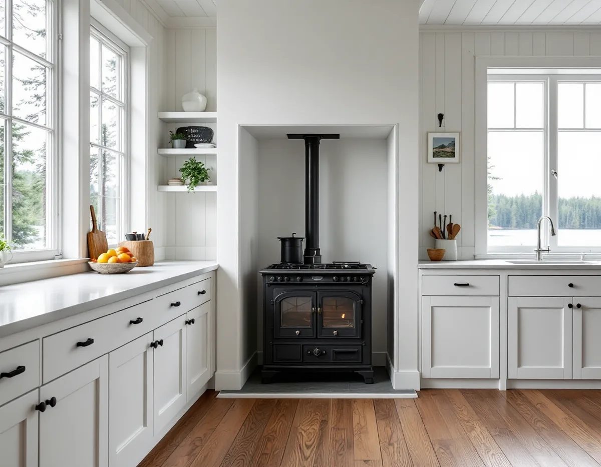
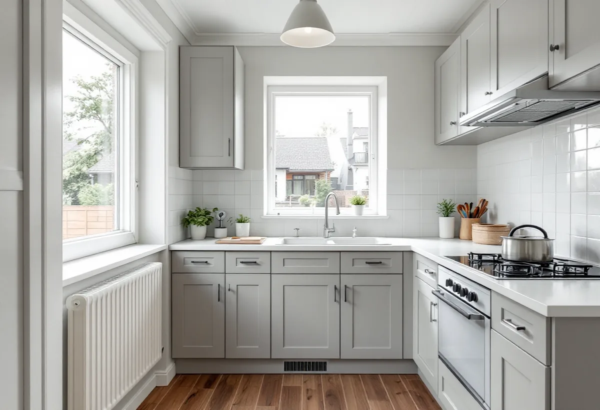

Platsbesök
Vi går igenom kök, stammar, ventilation och skorsten och hör vad du vill förändra.
En köksrenovering i Nacka kan gälla ett radhuskök från slutet av 1960-talet i Älta eller ett kök i en sekelskiftesvilla i Saltsjöbaden där någon vill ha en vedspis igen. Det är två helt olika jobb. Vi börjar med huset, tar hand om rivning, snickeri och ytskikt och samordnar el och VVS – med gratis platsbesök och ROT-avdraget direkt på fakturan.

Nackas villabebyggelse har två rötter. Längs Saltsjöbanan växte villasamhällen fram från 1890-talet: Saltsjöbaden anlades som bad- och villastad, Neglinge byggdes i huvudsak 1895–1910, Storängen grundades 1904 och Saltsjö-Duvnäs 1907. Vid farleden i Boo byggdes sommarvillor från 1860-talet och framåt, och i Sommarbo, som styckades för fritidshus från 1930-talet, bor allt fler året runt.
Den andra roten är efterkrigstidens småhus. I Älta stod det första radhusområdet, med 25 radhus söder om Erstaviksvägen, klart 1968–1969, och fler områden följde snabbt. Ett kök i ett sådant radhus har sin plats bestämd av längans gemensamma stammar och ventilation, och det påverkar vad som går att flytta.
I en sekelskiftesvilla är förutsättningarna andra. Rummen är fler och större, men el och rör har ofta kompletterats i flera omgångar, och skorstenen kan rymma både rökkanaler och ventilationskanaler. Vad den rymmer i just ditt hus är bland det första vi tar reda på.

I hus byggda mellan 1961 och 1975 var frånluftsventilation vanlig, med fläktar som drar ut luften via don i kök, badrum och toalett. Uteluften kommer in genom don i ytterväggarna. I ett sådant hus är köksfläkten en del av ett system, och att ansluta en starkare motordriven fläkt kan rubba balansen för hela huset. Installation eller väsentlig ändring av ventilation kräver anmälan enligt plan- och byggförordningen.
Diskbänken ligger nära avloppsstammen, och att flytta den till en köksö betyder nya ledningar i bjälklag eller platta. En installation eller väsentlig ändring av anläggningen för vatten eller avlopp i byggnaden är också anmälningspliktig. Ofta är det bättre att behålla diskbänkens läge och i stället göra om bänkytor, förvaring och belysning.
Bor du i en radhusförening där köken är lika i hela längan är det klokt att höra med grannarna. Har någon redan bytt kök vet de var stammarna går och vad föreningen har sagt om ventilationen.
Nacka kommun skriver att den som installerar eller väsentligt ändrar en eldstad ska göra en anmälan, och kommunen räknar uttryckligen upp kamin, öppen spis, kakelugn och vedspis. Även en tyngre eldstad eller ett byte av bränsleslag kan vara en väsentlig ändring. En skorsten som byggs utanpå fasaden kan dessutom kräva bygglov om huset ligger i en kulturmiljö.
Kommunen har automatiserat besluten om eldstäder: en robot granskar anmälan och skickar beslut inom fem minuter. När installationen är klar ska den besiktigas av en sotare, och eldstaden får inte användas förrän kommunen gett slutbesked. Planera därför in sotarbesiktningen innan köket ska tas i bruk.
För köksrenoveringen betyder en vedspis mer än själva spisen: golvet ska bära vikten, avstånd till skåp och bänkar ska hållas och rökkanalen ska vara i skick. Ska skorstenen lagas eller muras om finns mer under skorstensrenovering.
Nacka kommun påpekar att lättnaderna i de nya PBL-reglerna inte gäller fastigheter i särskilt värdefulla områden enligt 8 kap. 13 § PBL. Där krävs bygglov för alla fasadändringar – till exempel ett nytt köksfönster, en dörr mot altanen eller ett nytt galler för frånluften. Kommunens webbkarta visar kulturmiljöerna, men kommunen skriver själv att lagret uppdateras och inte är helt korrekt överallt.
Saltsjöbaden är riksintresse för kulturmiljövården. Är du osäker rekommenderar kommunen att du kontaktar Stadsbyggnadsservice tidigt och pratar med grannarna innan arbetet börjar. Se också köksrenovering i Stockholm för planering och val av nivå.
Vi går igenom kök, stammar, ventilation och skorsten och hör vad du vill förändra.
Vi tittar i kommunens webbkarta om huset ligger i en kulturmiljö och vad som kan kräva lov.
Du får ett skriftligt förslag med rivning, snickeri, el, VVS och eventuell eldstad var för sig.
Ändras ventilation, VA eller eldstad lämnas anmälan in innan arbetet startar.
Gamla skåp rivs, installationerna dras och golv, väggar och stomme monteras.
Vitvaror ansluts, sotaren besiktar en ny eldstad och du får handlingarna.
Du får 30 procent av arbetskostnaden i avdrag, högst 50 000 kronor per person och år, och rot och rut får tillsammans vara högst 75 000 kronor. Skatteverket godkänner i småhus bland annat att installera och reparera braskaminer, att mura och reparera skorstenar, öppna spisar och kakelugnar och att installera och komplettera elcentraler. Att kontrollera eldstäder och skorstenar ger däremot inget rotavdrag.
Material som skåp, bänkskiva, spis och vitvaror ger inget avdrag. Vi drar avdraget direkt på fakturan.
I radhuset är det oftast frågan om diskbänk och fläkt kan stå kvar. I villan tillkommer ibland en eldstad, en skorsten som behöver åtgärdas eller en el som behöver kompletteras. Storlek, stomme, bänkskiva och vitvaror styr resten. Du får ett skriftligt kostnadsförslag efter ett gratis platsbesök.
Planering, el, VVS, fläkt och väggar.
Köksrenovering i Stockholm →Takbyte, takbesiktning och plåtarbeten.
Takläggare i Nacka →Saltsjöbaden, Boo och Älta.
Takrenovering i Nacka →Villasamhällena vid Saltsjöbanan.
Fönsterbyte i Nacka →Farledens plåttak och Saltsjöbadens villor.
Plåtslagare i Nacka →Strandskydd och villasamhällen.
Tillbyggnad i Nacka →